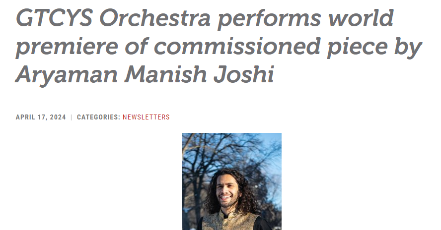
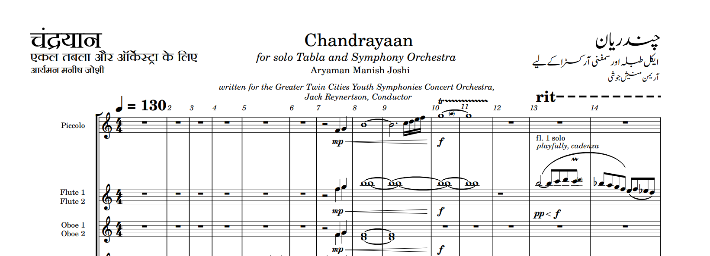
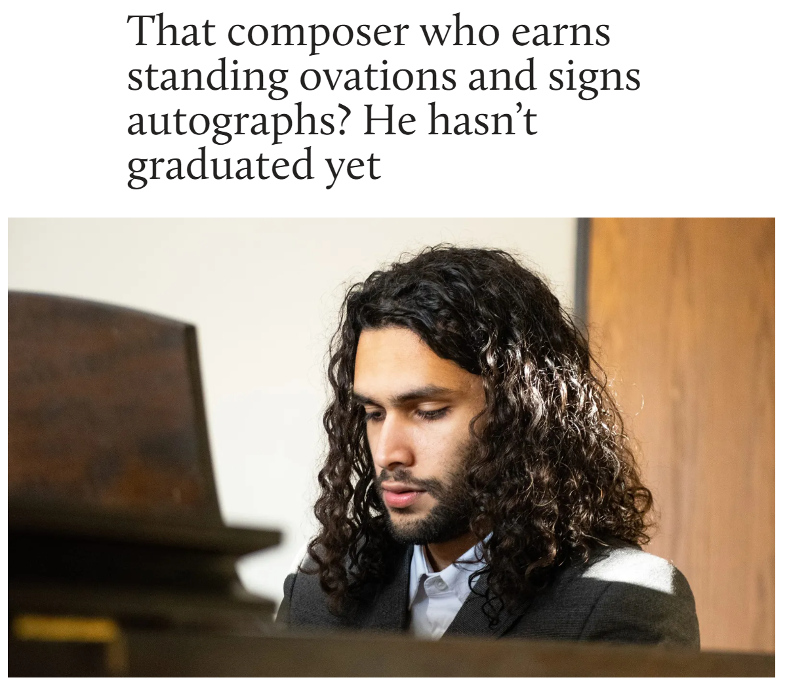
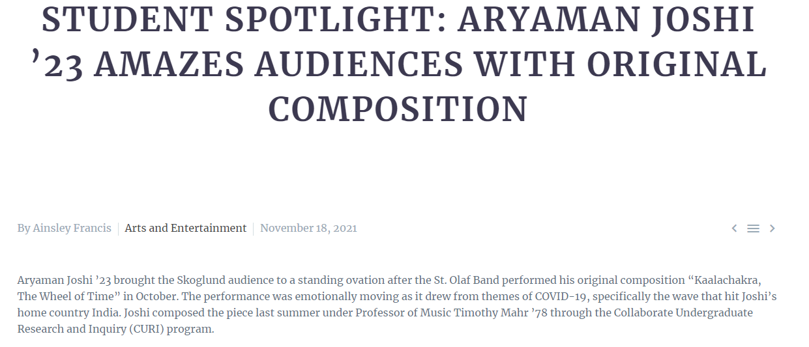

✦ Calendar ✦
✦ Upcoming ✦
2024, April 21st
Chandrayaan World Premier Performance with GTCYS at Edina High School
2024, May 11th
Chandrayaan Second Performance with GTCYS at Minnesota Orchestra Hall
✦ Past Events ✦
2024, April 17th
GTCYS released an article about me, thank you so much Andrea, Miranda, Jack, and GTCYS!! Y'all are incredible to work with.
Check out the article here.

2024, February 5th
I just got commissioned by accomplished low brass player Karl Wiederwohl!!
I have been commissioned to write a piece for Bass Trombone and Concert Band. I have also had the famous Minnesota Symphonic Winds (MSW)
conducted by Dr. Timothy Mahr agree to play my piece. An exceptionally good band, with a renowned conductor and an amazing Trombonist.
What's more to ask? Expect to hear the bass trombone in a very fresh context!
2024, January 15th
Just finished my commision for GTCYS!! I'm excited to introduce my latest commission "Chandrayaan"
named after the recent success of the Chandrayaan III mission. Watch out for the performance dates! This kind of thing only happens once in a blue moon. Here's a very small sneak peek of the score:

2023, September 20th
Just got commissioned to write a piece for the
Greater Twin Cities Youth Symphonies: Concert Orchestra.
I have been asked
to write a piece for a Symhpony orchestra and a Tabla Soloist! I'm over the moon about this exciting and unique opportunity!
The Conductor who commissioned me is Jack Reynertson and the Tabla player is A. Pavan
2022, February 4th
I have been featured in the St. Olaf Annual Magazine! What an honour!
Check out the article here.

2021, November 15th
The St. Olaf Manitou Messenger did an article about me, yhay! Thanks Ainsley!
Check out the article here.

2001, April 13th
I just got born! Let's gooo!
GTCYS released an article about me, thank you so much Andrea, Miranda, Jack, and GTCYS!! Y'all are incredible to work with. Check out the article here.
I just got commissioned by accomplished low brass player Karl Wiederwohl!! I have been commissioned to write a piece for Bass Trombone and Concert Band. I have also had the famous Minnesota Symphonic Winds (MSW) conducted by Dr. Timothy Mahr agree to play my piece. An exceptionally good band, with a renowned conductor and an amazing Trombonist. What's more to ask? Expect to hear the bass trombone in a very fresh context!
Just finished my commision for GTCYS!! I'm excited to introduce my latest commission "Chandrayaan" named after the recent success of the Chandrayaan III mission. Watch out for the performance dates! This kind of thing only happens once in a blue moon. Here's a very small sneak peek of the score:
Just got commissioned to write a piece for the Greater Twin Cities Youth Symphonies: Concert Orchestra. I have been asked to write a piece for a Symhpony orchestra and a Tabla Soloist! I'm over the moon about this exciting and unique opportunity! The Conductor who commissioned me is Jack Reynertson and the Tabla player is A. Pavan
I have been featured in the St. Olaf Annual Magazine! What an honour! Check out the article here.
The St. Olaf Manitou Messenger did an article about me, yhay! Thanks Ainsley! Check out the article here.
I just got born! Let's gooo!